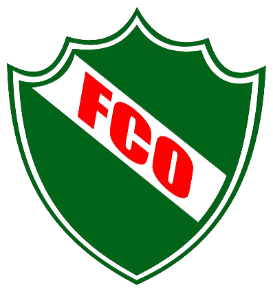

Club Atlético Ferro Carril Oeste
"El Verde"
Fundado el 24 de junio de 1934Estadio
El Coloso del Templo
Categoría
Torneo Federal A / Liga Pampeana
Ciudad
General Pico, La Pampa
Resumen Institucional
El Club Atlético Ferro Carril Oeste es una emblemática institución deportiva de General Pico, La Pampa. Identificado históricamente con el Barrio Talleres, el club ha sido protagonista de los torneos más relevantes del fútbol pampeano y nacional.
Disputa el clásico piquense frente a Costa Brava. Además de su amplio palmarés en la Liga Pampeana de Fútbol, cuenta con una rica trayectoria en certámenes federales de la AFA.
Historia
Nacido en 1934, Ferro Carril Oeste fue impulsado por la comunidad ferroviaria de la ciudad. Su estadio, popularmente conocido como "El Coloso del Templo", es uno de los recintos futbolísticos más importantes de la provincia de La Pampa.